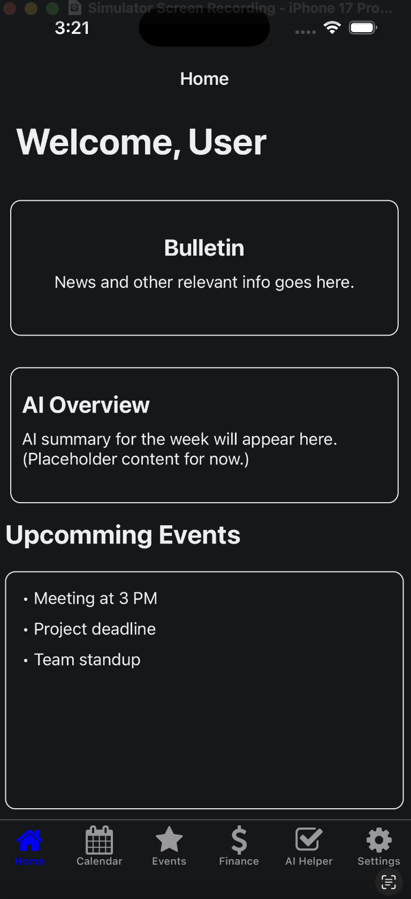
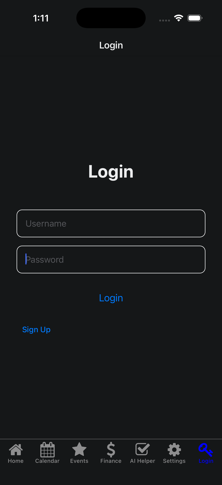
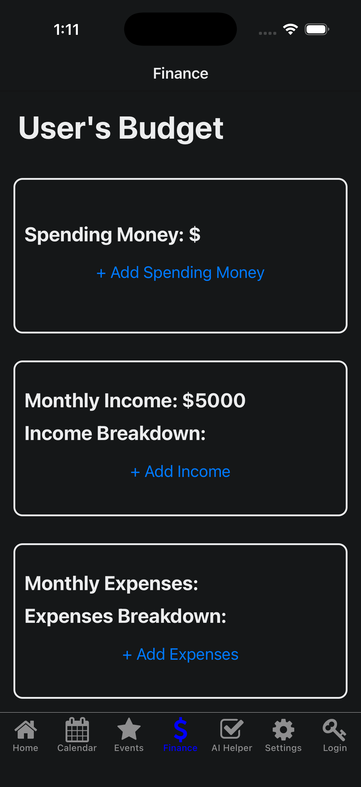
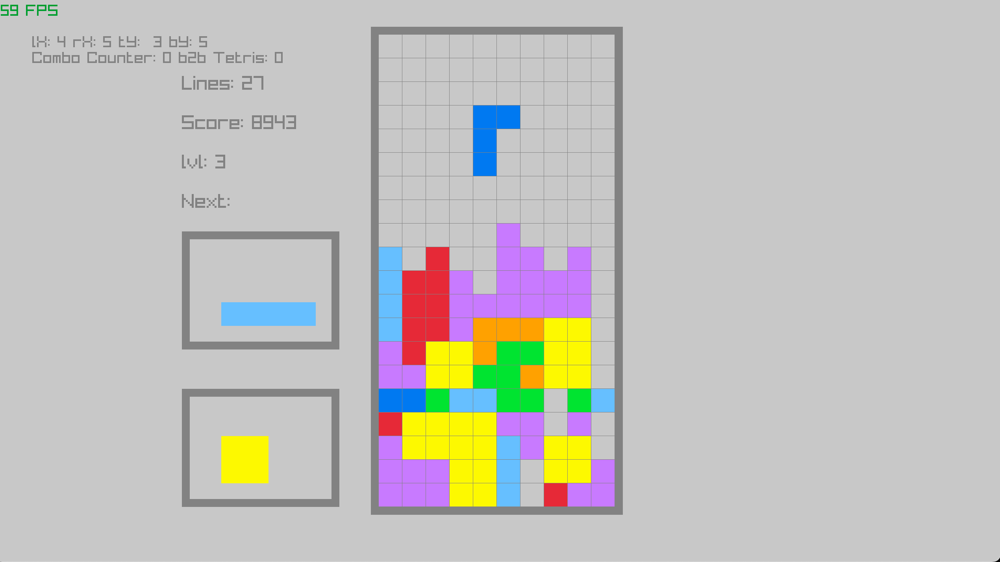
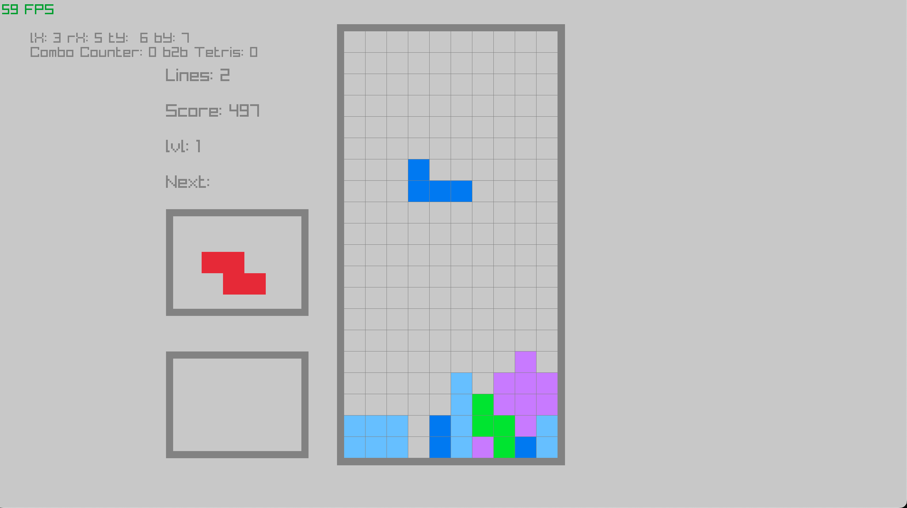

Projects
A list of things I'm working on or have worked on in the past. Includes school and personal projects
StudentLife Web App
Project from Fall 2025 CS-3203 Software Engineering course
StudentLife prototype was designed to be a productivity app for students to organize assignments, homework, and exams.
Features included a calendar, AI study assistant, and campus events.
StudentLife was created in React Native using the Expo framework. Originally designed to work on Android and iOS devices,
the final demonstrated prototype worked best in the form of a web app. Microsoft Azure Services were used to store and update user data, as well as hosting the AI assitant.
My personal contributions to the project mainly included setup of React Native and Expo development environments for my, and my group members' machines; front-end programming; UI design; and functionality/security testing.
-

-

-

C++ Tetris Project with RayLib
I've been writing a clone of tetris programmed in C++ with the raylib library.
The goal for this project is to avoid using any guides or tutorials on making a tetris clone,
referring only to my personal knowledge of the game, some info about the math behind core game mechanics
(i.e. score calculation, piece fall speed, etc. all sourced from tetris wiki), and raylib documentation.
The end goal is to compile the game to Web Assembly and have it running on this website.
In the meantime, here are some assorted screenshots:
-

-

Personal File Server
Turned my old Gaming PC into a file server running Fedora Server. Got SSH and SSHFS up and running for file transfers.
Working on running a minecraft server on it.
Custom Built PC
Speaking of Gaming PCs, I enjoy building my own PCs for personal use.
My current computer has the following specs:
- CPU: AMD Ryzen 7700x
- GPU: Gigabyte Windforce OC Geforce RTX 4070
- RAM: G.Skill Trident Z5 32GB DDR5-6400
- Motherboard: MSI MAG B650 TOMAHAWK
- Storage: WD Black SN770 1TB PCIe 4.0 NVME SSD + WD Black SN850X 2TB PCIe 4.0 NVME SSD
- PSU: Corsair RM850x 850w 80+ Gold
- Cooling: Arctic Liquid Freezer III 360 + 3 additional Arctic fans
- OS: Dual Boot Linux Mint and Windows 11
Audio Spectrum Display
Working on making an audio spectrum visualizer using an ESP32 Developer Board and a small 8x32 LED Matrix display. A good exercise in using FFT and spectrum analysis.
This Website
This website is a continuous project of mine that gets updated with relevant information. This website is created strictly using HTML, CSS, and JavaScript. The only tool I use to add to this website is VSCode.